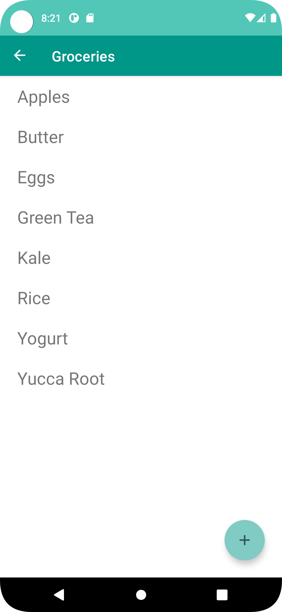

ListMaker
ListMaker is an Android app useful for creating nested lists of items worth remembering. This app implements the Android Jetpack Room Library in order to persistently store user created lists within a SQL database on the user's device. This app also demonstrates the use of a ViewModel, LiveData, and the Android Navigation Component.
Koradi App
The Koradi App is A Flutter project allowing users to interact with Koradi Radio. This application has been localized for six different languages and allows users to connect to a continuous audio stream originating from the Koradi Radio server as well as access recordings of past activities and submit listener questions via their web form. It implements a background audio service in order to continuously play media.

Web Crawler
This python script was written to crawl a website in order to find any anchor tags that
link to .zip file downloads. The address of these files is stored in a list and once
crawling is completed the script will download each file using the requests library.
import requests
import re
import os
from bs4 import BeautifulSoup
from tqdm import tqdm
target_url = //website to crawl
parent_dir = //location to store files locally
headers = {
'User-Agent': 'Mozilla/5.0 (Macintosh; Intel Mac OS X 10.15; rv:94.0) Gecko/20100101 Firefox/94.0',
}
def crawl():
target_links = []
print("Crawling Main Page")
response = requests.get(target_url, headers=headers)
soup = BeautifulSoup(response.content, 'html5lib')
indirect_links = soup.find_all('a', {'href': re.compile(r'/en.*-.*/')})
authors = [link['href'] for link in indirect_links]
print("Crawling Secondary Pages")
for each in tqdm(authors):
response = requests.get(each, headers=headers)
soup = BeautifulSoup(response.content, 'html5lib')
download_links = soup.find_all('a', {'href': re.compile(r'.*.zip')})
for link in download_links:
target_links.append(link['href'])
target_links = list(set(target_links))
print(len(target_links), "Files available for download...")
return target_links
def download(target_links):
print("Beginning Downloads...")
for link in target_links:
author = link.split('/')[-2]
file_name = link.split('/')[-1]
dir_path = os.path.join(parent_dir, author)
if not os.path.exists(dir_path):
os.mkdir(dir_path)
file_path = os.path.join(dir_path, file_name)
if not os.path.isfile(file_path):
print("Downloading file:%s from %s" % (file_name, author))
response = requests.get(link, stream=True)
with open(file_path, "wb+") as f:
for chunk in tqdm(response.iter_content(chunk_size=1024 * 1024)):
if chunk:
f.write(chunk)
print("%s downloaded!\n" % file_name)
print("All files downloaded!")
return
if __name__ == "__main__":
links = crawl()
download(links)